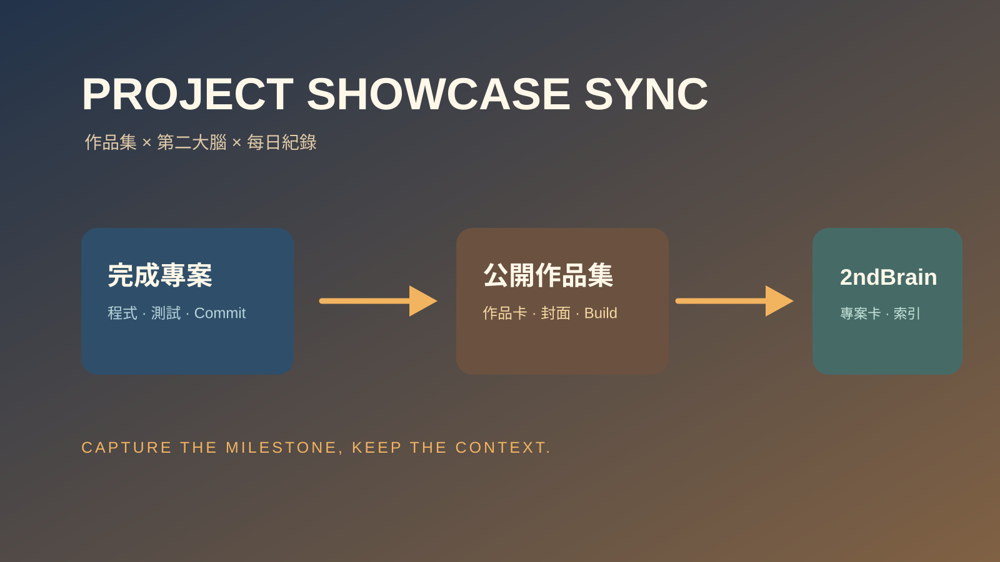

技能包 · 生產力工具
專案作品集與第二大腦同步
2026.08 · 個人專案

FIG. 16 — 產品主畫面
關於這個作品
專案作品集與第二大腦同步是一套用於專案里程碑收尾的 Skill。它會從實際程式與 Git 資訊萃取可驗證內容，將公開版的作品敘事與私有的工程快照分別收錄到 Portfolio 與 2ndBrain。
流程同時處理封面、作品索引、AI MOC、建置驗證與 Daily log，讓每個完成的 Side Project 都留下可展示、也可回顧的成果紀錄。
作品亮點
建立公開作品卡、封面、連結與靜態網站建置驗證
建立第二大腦 AI 專案卡，更新 MOC 與 Portfolio Works Index
以程式碼、測試與 commit 萃取可驗證資訊，不杜撰功能或成果
區隔公開作品內容與私有設定，避免憑證或敏感路徑外流